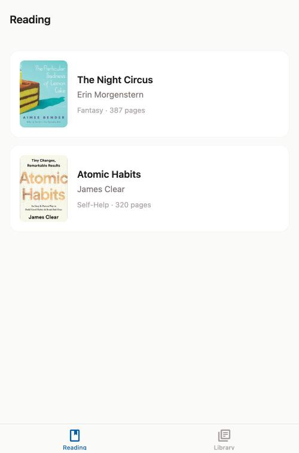
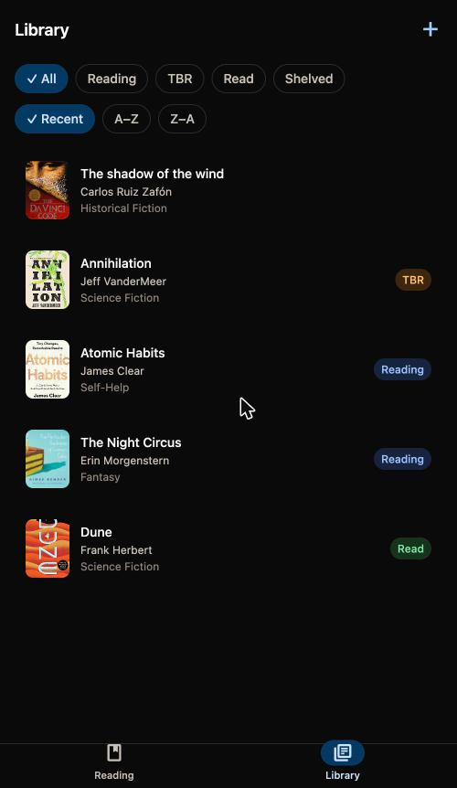
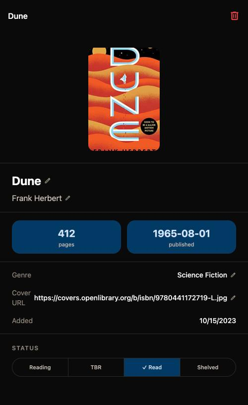
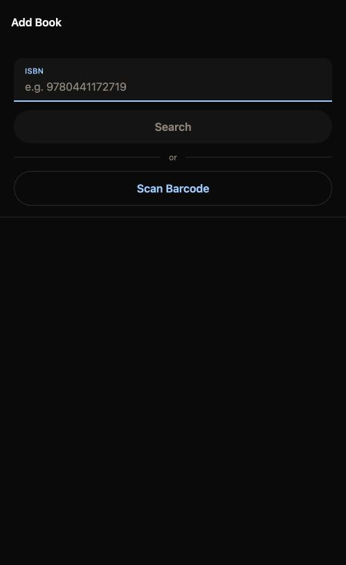

Point your phone at a shelf. Watch it become a catalog.
Cataloging a physical library by hand is tedious enough that most people never finish it.
Library Archive removes the friction from that one task: scan a barcode, and the book —
title, author, cover, genre, page count, publish date — appears in your library seconds
later, pulled from a live book database instead of typed in by hand.
No login screen, no backend, no analytics. Everything lives in a local SQLite database on
your device — closing the app never loses a change, and there's nothing to sync.
Material 3 components — filled text fields, filter chips, a segmented status picker, a pill-indicator nav bar — on an OLED-black theme, because it runs on a Pixel and should feel like it.

Reading
The default landing tab — just the books marked "Reading," no digging through the full catalog.

Library
The full collection, filterable by status and sortable alphabetically or by recency.

Book Detail
Every field — title, author, genre, page count, status — is tap-to-edit inline. No separate edit mode.

Add Book
Search by ISBN, scan a barcode, or fall back to manual entry when neither API has the book.
What It Does
One core loop, everything else secondary.
Scan your shelf
Point the camera at a barcode and the book gets looked up automatically. Bulk mode scans an entire shelf in one pass — scan, confirm, scan again — then commits everything at once.
Look books up two ways
Type an ISBN and it resolves the same way scanning does — Open Library first, Google Books as a fallback — or skip lookup entirely and enter details by hand.
Track what you're reading
A dedicated Reading tab surfaces just the books with "reading" status, separate from the full catalog.
Browse and filter
Filter the full library by status — Shelved, Reading, TBR, Read — and sort alphabetically, reverse-alphabetically, or by recency.
Edit anything, inline
Every field on a book is tap-to-edit directly on the detail screen. No separate edit mode, no form to submit.
Everything persists offline
Local SQLite is the source of truth; in-memory state and the database stay in sync, so closing the app never loses a change.
Under the Hood
Small, boring, on-device.
Framework
Expo (React Native)
Native camera + SQLite access, no native build step during development.
Routing
Expo Router
File-based routes keep the six screens self-evident from the folder structure.
Styling
NativeWind
Utility classes, no hand-rolled StyleSheet objects — drives the OLED-black / warm-orange theme.
State
Zustand
One small store holding the in-memory book list, hydrated from SQLite on launch.
Persistence
expo-sqlite
Local, offline, no server — every add/edit/status-change writes straight to disk.
Book lookup
Open Library → Google Books
Open Library needs no API key; Google Books fills the gaps it misses.
Try It
Running locally
No account, no backend to stand up. Clone it, install, and point Expo Go at the QR code — or run it straight on a connected Android device.